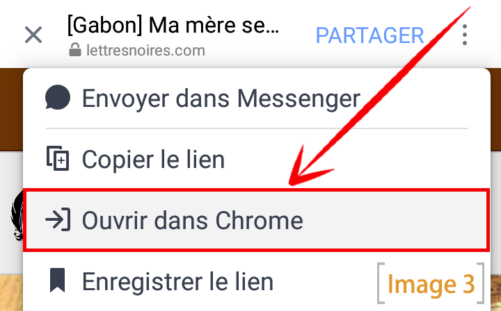
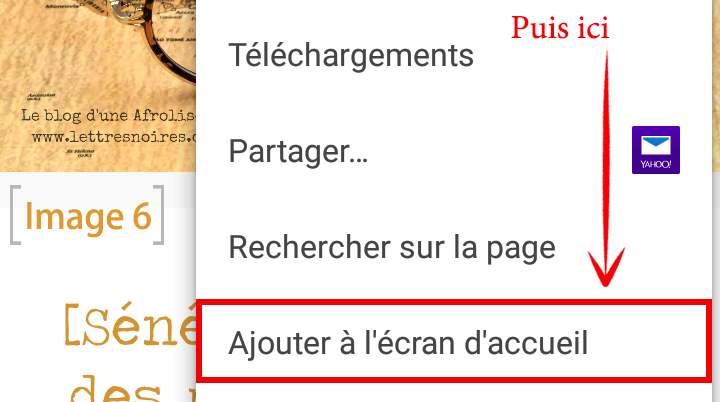

Si vous avez google chrome sur votre mobile Android, vous pourrez acceder a mon blog comme a une application mobile et en quelques cliques. le resultat dans la photo en bas ^_^

comment le faire? Alors si vous avez ouvert cet article depuis un lien Facebook, il vous suffit de suivre l'exemple de la photo en bas.

Ensuite clickez sur "ouvrir dans chrome". image plus bas

une fois sur le site via le navigateur google chrome, vous verrez apparaitre un pop up d'en bas comme l'image en bas, il vous suffit ici de valider et c'est fait. mon icon se trouve maintenant sur votre ecran d'accueil.

Si etes deja sur chrome mais avez manque le pop up sans le valider et que vous ne le voyez plus, ce n'est pas grave.
